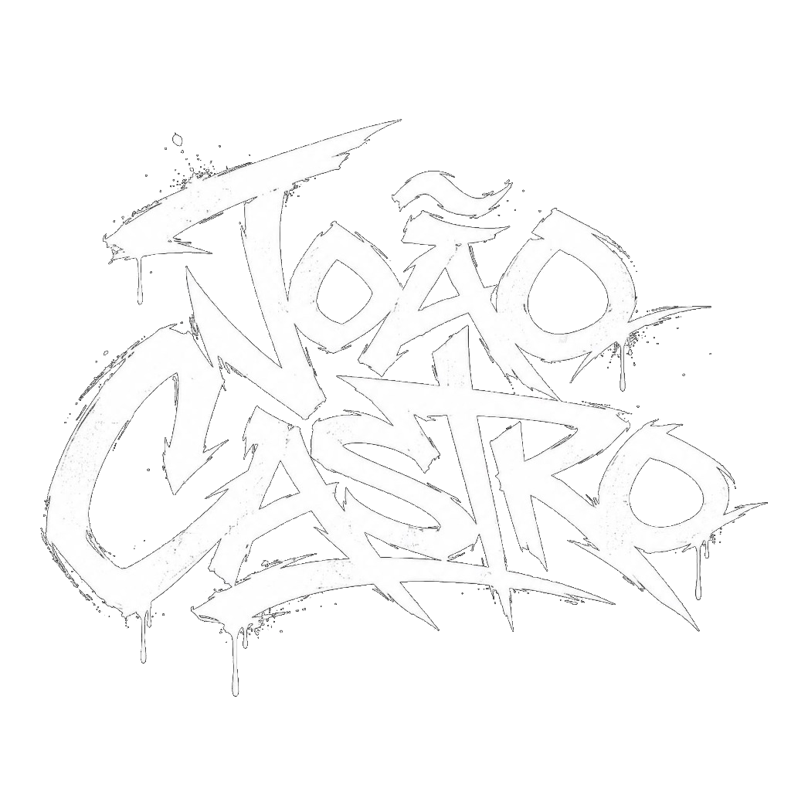
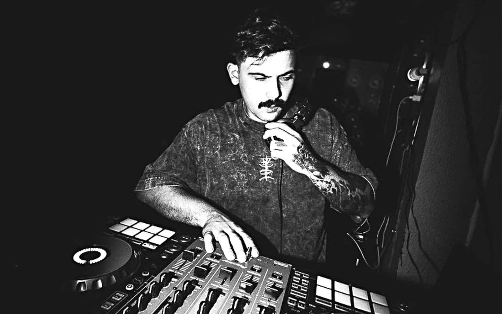
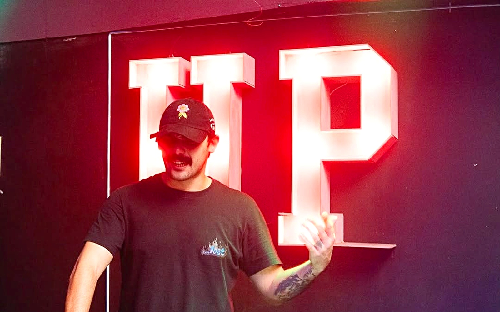
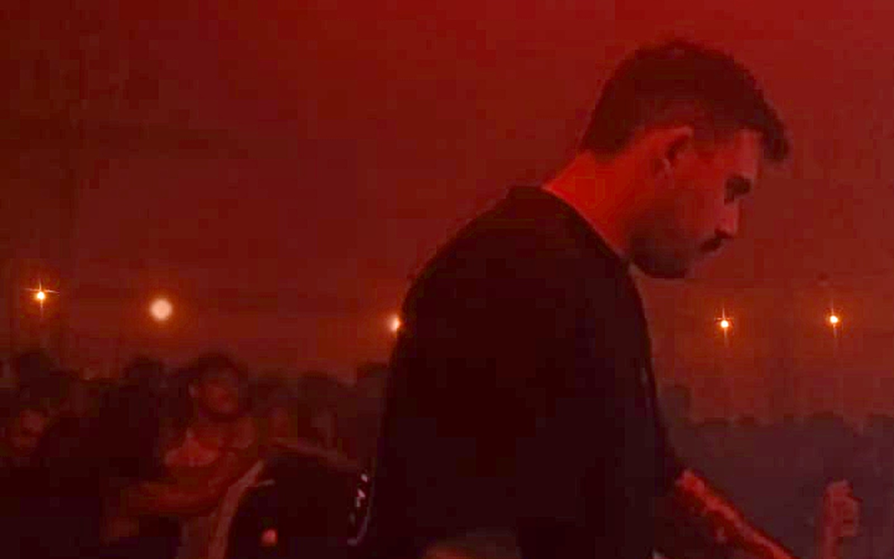
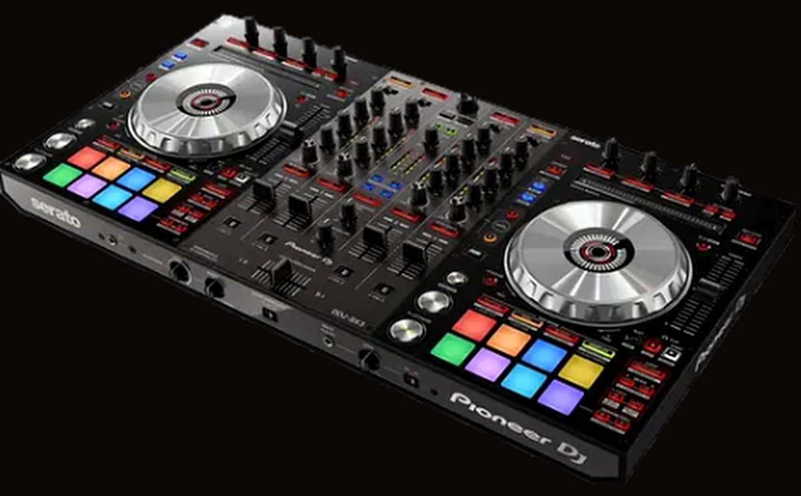

FUNK ◆ ENERGIA ◆ ATITUDE
João Castro é DJ e artista que transforma o funk em experiência — unindo batidas envolventes, drops marcantes e a essência da cultura urbana em apresentações de pura energia e atitude.
IDENTIDADE SONORA & TRAJETÓRIA

ESTILO & SOMJoão Castro é DJ e artista que transforma o funk em experiência. Com uma identidade sonora marcada por energia, presença e atitude, seus sets transitam pelas diferentes vertentes do funk, conectando batidas envolventes, drops marcantes e uma leitura precisa da pista.

PERFORMANCEMais do que tocar música, João Castro busca criar momentos — conduzindo o público por uma experiência intensa, dançante e autêntica em cada apresentação.

CULTURA URBANASua proposta une performance, identidade e conexão com a pista, levando o funk para diferentes ambientes e mantendo a essência da cultura urbana presente em cada apresentação.

DISPONÍVEL PARA EVENTOS, FESTAS, CLUBES E PARCERIAS.